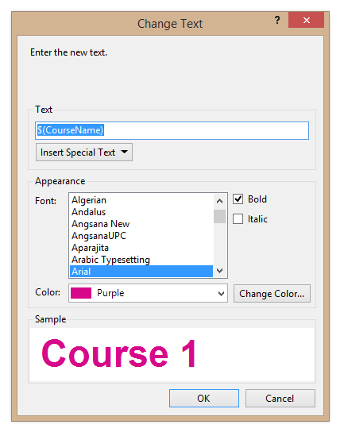

Item/Change Text...
Select the Change Text... command to change text that was created with the Add Text command.

Change the text that you wish to be displayed, and press OK. Click the "Insert Special Text" button to insert special texts (see the Add Text command for more detail).
You can customize the appearance of the text on the map as follows:
Font: Select the name of the font you wish to use. You can see a preview of the text in the "Sample" box.
Bold: Check the box to boldface the text.
Italic: Check the box to make the text italic.
Color: Select the color of the text. You can select one of the predefined colors from the list. If you select "Purple", the color of the text will match the purple color used for the rest of the course (which can be set through the Customize Appearance command.)
Change Color: If you wish to select a color other than the predefined colors in the list, click this button and choose the amount of Cyan, Magenta, Yellow, and Black in the color that you want.